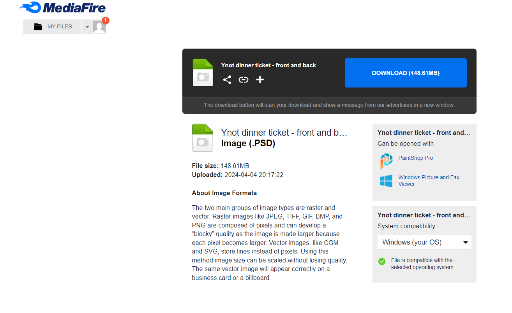

Hello Ynot!
So since sending the file by Email didn't work. I came up with a crazy idea to
create a website just for you guys
Instrutions
Steps
- Click the link down below to download the file
-
You will be directed to a media fire site to download. Just click the button
and your'e good to go

Download the PSD file
Thank you Ynot! (Comfort)
I Sincerly hope it was of any help